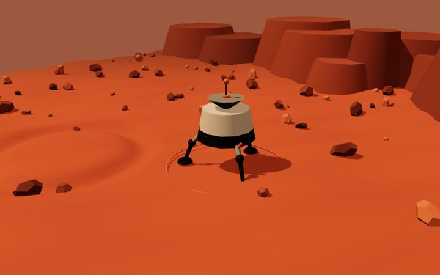
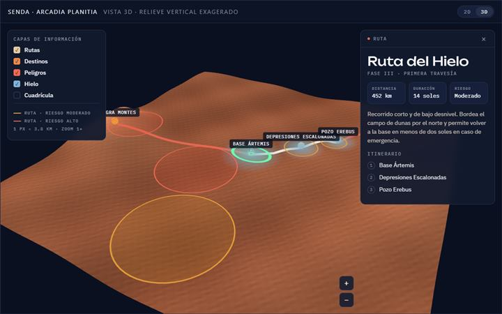
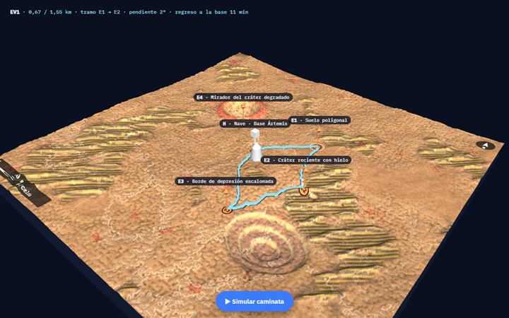
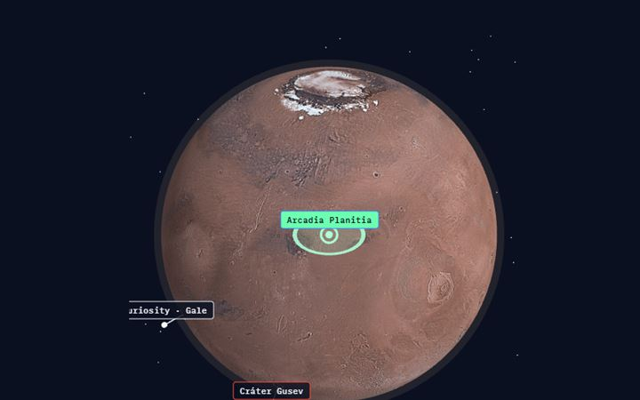

<div data-pg="inicio" hidden class="ux-home">
  <section class="ux-hero">
    <div class="ux-hero-txt">
      <span class="ux-eyebrow" data-es="TESLA STARS ONE · NASA Space Apps Challenge 2026" data-en="TESLA STARS ONE · NASA Space Apps Challenge 2026"></span>
      <h1 class="ux-h1">Senda</h1>
      <p class="ux-lead" data-es="Del dato abierto a la &lt;em&gt;primera huella&lt;/em&gt;. Planea, paso a paso, la primera caminata humana en Arcadia Planitia, Marte." data-en="From open data to the &lt;em&gt;first footprint&lt;/em&gt;. Plan, step by step, the first human walk on Arcadia Planitia, Mars."></p>
      <div class="ux-cta">
        <a class="ux-btn pri" href="#candidatos" data-es="Comenzar la misión" data-en="Start the mission"></a>
        <a class="ux-btn" href="#eva" data-es="Ir a la caminata" data-en="Go to the walk"></a>
      </div>
      <div class="ux-livebar" id="uxLive" aria-live="off"></div>
    </div>
    <div class="ux-hero-globe" data-globe-slot></div>
  </section>

  <section class="ux-steps" aria-label="Etapas de la misión">
    <a class="ux-step" href="#candidatos"><span class="n">1</span><b data-es="Elegir el sitio" data-en="Choose the site"></b><span data-es="Por qué Arcadia Planitia y no Gusev o Meridiani." data-en="Why Arcadia Planitia instead of Gusev or Meridiani."></span></a>
    <a class="ux-step" href="#aterrizaje"><span class="n">2</span><b data-es="Aterrizar" data-en="Land"></b><span data-es="La secuencia de descenso y el módulo en 3D." data-en="The descent sequence and the 3D module."></span></a>
    <a class="ux-step" href="#mapa"><span class="n">3</span><b data-es="Conocer la región" data-en="Know the region"></b><span data-es="Relieve, travesías, hielo y peligros." data-en="Relief, traverses, ice and hazards."></span></a>
    <a class="ux-step hl" href="#eva"><span class="n">4</span><b data-es="Caminar 2 km" data-en="Walk 2 km"></b><span data-es="La ruta más segura, en mapa y en 3D." data-en="The safest route, on the map and in 3D."></span></a>
  </section>

  <section class="ux-3d" aria-labelledby="ux3dT">
    <div class="ux-3d-head">
      <h2 id="ux3dT" class="ux-h2" data-es="Modelos 3D del equipo" data-en="The team's 3D models"></h2>
      <p data-es="Cuatro escenas interactivas: gíralas, acércate y explóralas con el dedo o el mouse." data-en="Four interactive scenes: rotate, zoom and explore them with your finger or mouse."></p>
    </div>
    <div class="ux-3d-grid">
      <a class="ux-3d-card big" href="#modulo"><span class="tag3d">3D</span>
        <div><b data-es="Módulo de aterrizaje · Mars Explorer" data-en="Landing module · Mars Explorer"></b><span data-es="Patas articuladas que se adaptan al terreno, sobre una llanura con cráter, mesas y rocas." data-en="Articulated legs that adapt to the terrain, on a plain with a crater, mesas and rocks."></span></div></a>
      <a class="ux-3d-card" href="#mapa"><span class="tag3d">3D</span>
        <div><b data-es="Región de Arcadia en relieve" data-en="Arcadia region in relief"></b><span data-es="Tres travesías, destinos, peligros y hielo; con astronauta animado." data-en="Three traverses, sites, hazards and ice; with an animated astronaut."></span></div></a>
      <a class="ux-3d-card" href="#eva"><span class="tag3d">3D</span>
        <div><b data-es="Caminata de 2 km en relieve" data-en="2 km walk in relief"></b><span data-es="La ruta segura sobre el terreno, con simulación del astronauta." data-en="The safe route over the terrain, with an astronaut simulation."></span></div></a>
      <a class="ux-3d-card" href="#candidatos"><span class="tag3d">3D</span>
        <div><b data-es="Marte y los sitios candidatos" data-en="Mars and the candidate sites"></b><span data-es="El planeta completo con Arcadia, Gusev, Meridiani y Curiosity." data-en="The whole planet with Arcadia, Gusev, Meridiani and Curiosity."></span></div></a>
    </div>
  </section>
</div>
